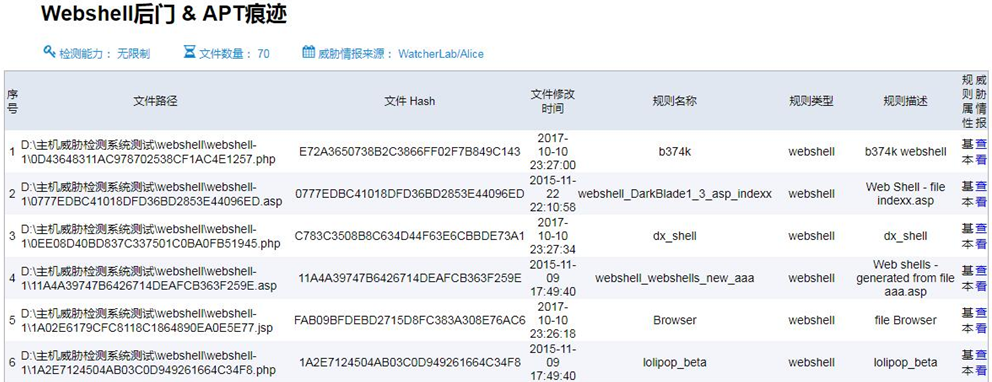
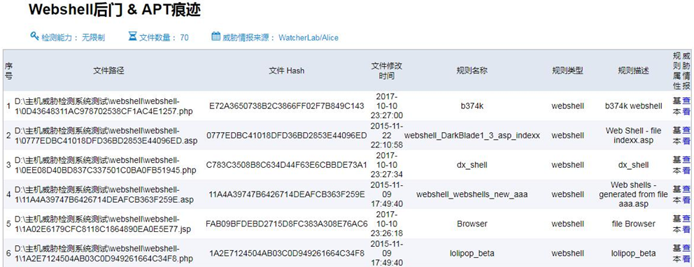

北京云盾
- 产品介绍
- 产品功能
- 产品形态
- 产品特点
“红探”网络安全事件调查处置工具箱（简称：红探调查工具箱）依据网络安全事件调查处置国家标准规范及行业标准设计和开发，融入了公司多年来在安全领域积累的咨询服务经验和安全工具开发经验，可为相关部门对网络安全事件调查处置工作的执行提供专业化技术支撑。 该产品主要针对网络安全事件调查处置而设计开发的一套专业设备，可从容应对可能发生或者已发生的网络安全事件，在最短的时间内，全自动采集分析，减少对处置人员的人数和专业技能的依赖，实现了调查处置的专业化；提高了数据的采集深度、分析维度、关联分析复杂度和分析粒度，面对入侵痕迹已被清除的情况，仍然可以发现隐藏的木马病毒，攻击行为中的蛛丝马迹，利用数据恢复技术，还原局部，乃至全部攻击痕迹，实现了调查处置的智能化；依据主管部门标准规范，全程采用六步引导式处理流程，简洁清晰。自动化生成5类《分析报告》，缩短处置周期，提高处置质量，实现了调查处置的规范化。
提供给网信、网安部门、安全服务机构、运维机构、企事业单位等，用于网络安全事件应急处置，调查服务器、终端主机是否遭受网络安全攻击，提取攻击痕迹，查找攻击IP源，建立攻击链，一键输出安全分析报告。
产品由四部分组成：软硬一体化便携式三防本（含管理分析平台）、自动化采集工具、加密存储精灵、便携式手提箱。
1、流程化简单易用
2、多层面关联检查分析
3、WEB日志深度分析
 

4、系统日志深度分析
5、数据采集范围广深度深
内核态钩子与对象操作技术：当前的病毒、木马和各种rootkit等恶意程序已经深入到系统内核中，运行在内核中，具有系统的最高权限，可以任意绕过或拒绝传统的处于应用层的安全软件的防范和监控。
联系我们电话：010-64392662传真：010-64392662地址：北京市海淀区上地三街9号金隅嘉华大厦C座501室
法律声明Copyright © 北京云盾科技有限公司 版权所有 京ICP备05032414号 京公网安备11010802024551号